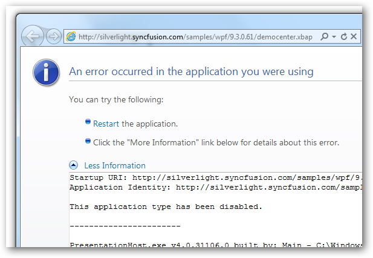
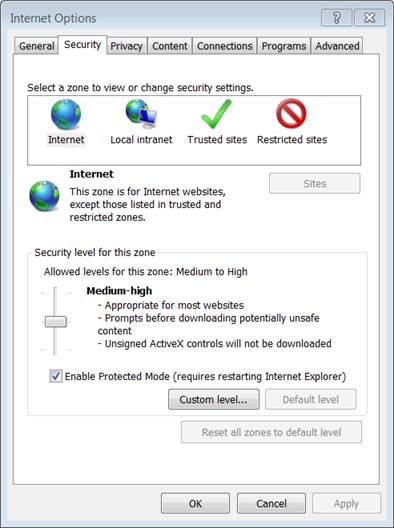
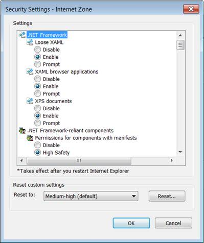
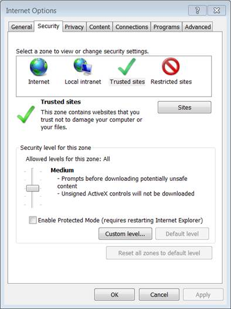
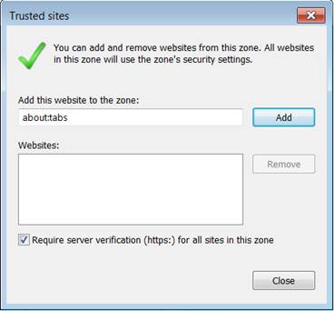

The XBAP applications are disabled by default in Internet Explorer 9 (IE 9). So an error message is displayed when XBAP Sample Browser is accessed. To overcome this you need to enable XBAP applications in IE9.

Figure 98 Error Message
Enabling XBAP Applications in IE9
Microsoft has changed the security settings in IE9 because XBAPs are primarily used as internal, trusted applications.
To Enable XBAP:
1. Open IE9
2. Navigate to Tools-->Internet Options.
3. In the Security tab click Custom Level.

Figure 99 Security Settings
The Security Setting – Internet Zone dialog box opens.
4. Select Enable option in XAML browser applications.

Figure 100: Security Setting – Internet Zone Dialog Box
5. Click Ok.
Adding XBAP Application in Your Trusted Site:
You can add our XBAP application in your trusted sites using IE9.
The following steps illustrate this:
1. Open IE9.
2. Navigate to Tools --> Internet options.
3. In the Security tab, click Trusted Sites --> Sites.

Figure 101: Internet Option
The Trusted Sites dialog opens.

Figure 102: Trusted Sites
4. Add your XBAP’s domain to the list of trusted sites for the Internet Zone.
To run Syncfusion WPF XBAP Sample Browser, add the silverlight.syncfusion.com site into the list of trusted sites.
 Note: The user will not be able to run other XBAP
applications that are not added here.
Note: The user will not be able to run other XBAP
applications that are not added here.
5. Restart the browser.